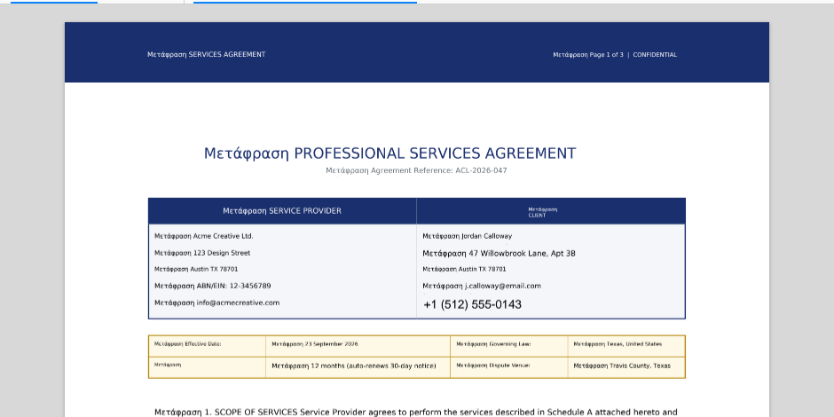

Tutorials > Working faster
Summarise, ask and translate with the AI assistant
Connect an AI provider, then ask questions about a document, get a summary, explain a passage and translate a whole PDF keeping its layout.
The AI assistant is optional. Nothing is sent anywhere until you connect a provider, and then only to the provider you choose.
Choose a provider#
You can use:
- Claude (Anthropic) with your own API key from console.anthropic.com
- OpenAI (ChatGPT) with your own API key
- GitHub Copilot models, with a GitHub token that has the Models: Read-only permission. It's free to try.
- A local model through Ollama or LM Studio. It's free, and the document never leaves your computer.
Add your key#
- Windows: Settings > AI.
- Mac and web: AI Assistant tab > API Keys.
Pick the provider, paste the key (or the local server's address), and save.
Ask about the document#
Open a PDF and click Open Chat (AI Assistant tab). Ask anything, for example:
- What's the notice period in this contract?
- List every date and deadline.
- Which pages talk about refunds?
Answers cite the pages they came from. Click a page reference to jump there.
Summarise it#
- Summarize writes a short summary of the whole document.
- Outline gives the key points of each section with links to the pages.
- Write turns it into an email, study notes, flashcards, a quiz, an FAQ or a list of actions.
Explain a passage#
Press Shift+S (Select Text) and drag over a paragraph. Choose Explain, Summarise, Rewrite, Translate or Ask. Drag over a chart or table and choose Ask about this area to send a picture of it.
Translate a whole PDF#
Click Translate PDF, pick the language, and PdfEdit makes a translated copy that keeps the layout, colours and pictures.

Let it do the work#
Ask the assistant to fill fields, highlight text, add notes, or run commands like compress this or export to Word. Each change appears as a card you Apply or Undo, so nothing happens without you.
What's next#
- Smart Fill, Extract Data, Contract analysis and Find PII each run in one click.
- AI assistant in the user guide